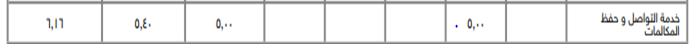
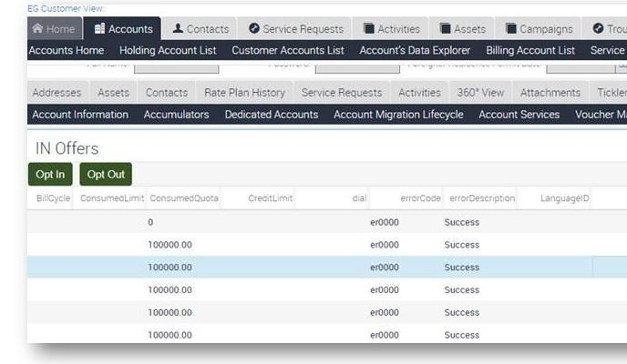
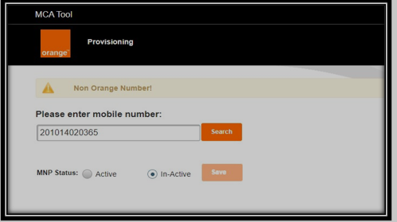
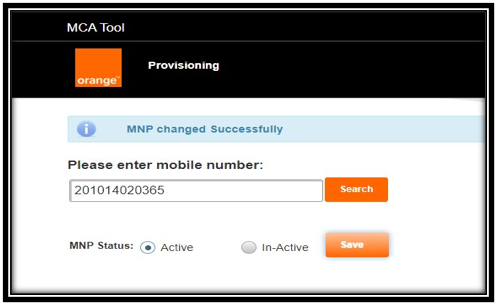
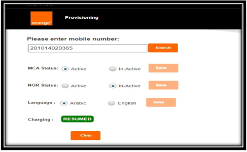

MCA Repricing for consumer customers
Basic Information
No. | Index |
|---|---|
1 | Guidelines 1.1. MCA SMS content 1.2. Bill View |
2 | |
3 | Service Fees |
4 | |
5 | 5.1. Service Addition/ Deletion 5.2.Notifications 5.3.How to Complaint |
6 | |
5 |
1. Introduction: |
|---|
MCA “Missed Call Alert” is to allow Orange customers to know any received call in case the device is switched off or out of the the coverage area.
2. Guidelines: |
|---|
- MCA service is valid for all Orange consumer customers.
- Service is not valid for Data lines.
- MCA is working in case the handset is switched off or out of the coverage area only.
- MCA language is Arabic by default, yet customers will not have the option to change it back to English; accordingly, don’t change it through the tool
- Call forward status will not affect MCA service
- Only the MCA tool determines if the service is active or not
- For postpaid customers only, there should be a certain SN code added on billing (for charging only, not for service activation).
- Customers will receive all call attempts in one accumulated SMS notification as long as all the calls originated from the same destination with the last call attempt date & time.
- Customers will receive the Missed calls Alerts automatically after being attached to the network without any interference from the customer's side.
- MCA trials are conducted within 10 hours only, so in case the customer's mobile was switched off or out of the coverage area for more than 10 hours, the MCA message won't be delivered to him/her.
- Customer will receive the notification within 10 mins after switching on his/her handset.
- Customers will receive a missed call alert SMS with the following details:
- Caller name -if listed in the handset phonebook
- Caller number -from any destination.
- Date & time of the call
- Total number of trials to call the customer while out of reach.
- MCA service is working on 2G, 3G, and 4G/5G networks.
- Customers cannot benefit from the service while roaming.
- MCA time format will be based on 24 hours.
Upon migration from one tariff to another, s
ervice fees will follow the destination tariff.- Customer must subscribe to MCA in order to benefit from the at (Now Reachable) service.
3. MCA SMS content: |
|---|
- Below are samples from the new MCA SMS content:
SMS Content | |
|---|---|
One call trial | "الرقم ده حاول يكلمك الساعة 12:12" |
Eleven calls and trials | "الرقم ده حاول يكلمك 11 مره الساعة 12:12" |
- MCA and NOR SMS updated to be as follows:
Now Reachable | Missed Call Alert |
|---|---|
الرقم متاح الآن يمكن الاتصال به. | الرقم ده حاول يكلمك الساعة 20:19. |
4. Bill View: |
|---|
- MCA service will be displayed on the bill with the names:
- خدمة التواصل و حفظ المكالمات
- Reachability /missed call alert Service.
- Note: it will be displayed for all tariffs with EGP 5.

Common Asked Questions
2. Scripts |
Scenario | Script |
|---|---|
Generic script | الخدمة دى بتعرف حضرتك الأرقام اللي حاولت تتصل بيك علي موبايلك وهو مقفول أو في منطقة خارج نطاق التغطية. ده طبعا عن طريق رسائل بتبلغ حضرتك بالأرقام دى و كام مرة حاولت تتصل ببك سعر الخدمة 5جنيه/الشهر(تجدد تلقائيا) وبيتم المحاسبة على حسب نظام الخط، سواء من الرصيد او على الفاتورة التحكم في الخدمه بيكون من خلال #757# او الاتصال ب757 ونقدر نتحكم في بعض الخدمات على الخط من خلال الكود الموحد # 155* |
Deletion script for Prepaid/Hybrid Customers: (Except Star Credit) | ممكن الغي لحضرتك الخدمه من خلالي او من خلال #757 # مجانا مع العلم إن تكلفتها اتخصمت بالكامل من الرصيد، وبكده مش حتتحاسب عليها تانى إلا إذا كان فيه أى مبالغ متاخرة من قبل كده لعدم الشحن، فهتتخصم تلقائى من الرصيد أول ما حضرتك تشحن. |
Deletion script for Postpaid Customers: | ممكن الغي لحضرتك الخدمه من خلالي او من خلال #757 # مجانا سيتم إلغاء الاشتراك فى خلال ساعه وتكلفتها هتنزل لحضرتك كاملة في فاتورة الشهر القادم |
(Hybrid) renewal script (Except Star Credit): | في حالة عدم وجود رصيد, يتم خصم 5 وحدات, و يتم تفعيل الخدمة لمدة يوم واحد |
In case of receiving inquiry from a customer asking to change the charges behavior for Star Credit tariffs: | دلوقتي اشتراك خدمه حفظ المكالمات ل خطوط ستار كريدت بيتضاف على الفاتوره |
How to Pay
3. Service Fees |
- Service fee is EGP 5.
- Postpaid & Star Credit customers will be charged on the bill with full charges.
- Prepaid customers will be charged from the customer's balance.
- In case the customer doesn't have full service fees, the service will be renewed partially based on available credit.
- If available credit is zero or less than 0.15 EGP, the customer can enjoy the service for one day on debt until payback.
- Charging behavior for Star credit tariffs has been changed as follows:
- Fees will be added to the customer’s bill instead of credit.
- Star credit customers will be charged on the bill with full charges of 5 EGP, with no proration.
- Below table displays partial renewal tiers for prepaid tariffs:
- Hybrid will be charged from customer's balance.
- In case customer doesn't have service full fees, service will be renewed partially based on available credit.
- In case customer doesn't have available credit, then 5 units should be deducted from customer's bucket's inclusive units to renew the service for one day.
- Daily renewal will be deducted on daily basis from bucket's units.
- Below table displays partial renewal tiers for Hybrid tariffs:
Charging on debt for Prepaid and Hybrid Tariffs:
- MCA debt will be added to DA# 198.
- MCA debt will be refunded upon recharge, while the customer is opted out of the service.
- Priority of the MCA debt in this case (only) will be after the emergency services debts.
- Subscription expiry/monthly next renewal date will be displayed in DA # 503 on Siebel.

4. Service Re-pricing |
- Service fees changed to be 5 EGP/Month instead of 1.5 EGP/Month.
- Upon subscription EGP 5 will be deducted from the user's balance or added on his/her bill according to line tariff.
- Prepaid & Hybrid (Except Star credit ) customers can renew the service based on available credit.
Re-pricing For Postpaid Tariffs:
- Postpaid customers will be charged on bill with full charges 5 EGP upon subscription with no proration.
Dissatisfied postpaid customers handling:
- MCA re-pricing for postpaid customers (Star & Eagle) will be reflected starting 1st of October 2021 invoice, while re-pricing will reflect starting from 1st of February 2022 invoice for Premier tariffs only.
- In case of receiving angry/dissatisfied customer regarding MCA re-pricing, agent should send SR 30829 to Complaint Handling in order to compensate the customer with MCA fees.
- Service fees can be waived for 2 months maximum “the issued bill and the next bill".
How to Manage My Account
5. How to Manage My Account |
Service Addition:
- To subscribe through IVR, the customer should call 757.
- In case the customer tries to subscribe through 400, s/he will be asked to call 757.
- To subscribe through USSD, the customer can follow any of the below:
- Dial #757# and follow the subscription steps.
- Dial #100#, choose other services, MCA, and subscribe.
- CC: The agent can take the action through the MCA tool or through the VAS Services tab "Siebel"
- Based on controlling your line handling, consumer prepaid & hybrid customers should be routed to add or delete MCA service through the following channels: #757#, 757 IVR
- Service will be activated on the spot upon subscription, yet please communicate addition SLA of 1h to our customers.
- Upon subscription, MCA service will be active on both the MCA tool and “Billing system" or “Charging system" according to the customer's segment:
- For Prepaid & Hybrid profiles (Control, panther, dolphin, el king, dragon, old prepaid, new ALO, etc.), service should be active on the “Charging system".
- For postpaid tariffs (Premier, Star credit, Star, Star limit, Eagle, etc.), service should be active on “Billing system".
Service Deletion:
- To unsubscribe through IVR, the customer can call 757.
- In case the customer tries to unsubscribe through 400, s/he will be asked to call 757.
- Service will be deactivated on the spot upon unsubscription, yet please communicate the deletion SLA of 1h to our customers
- To unsubscribe through USSD, the customer can follow any of the below:
- Dial #757# and follow the unsubscription steps.
- Dial #100#, choose other services, MCA, and unsubscribe.
- CC: agent can take the action through the MCA tool or through the VAS Services tab "Siebel"
- Code *155# is for deletion use only.
5.1. Notifications:
MCA notifications.xlsx
- Charged users will receive an SMS upon successful deduction, informing them of service activation (Renewal SMS).
- Customer will receive renewal notification SMS, except for the daily renewal.
- Unsubscribed customers will receive an SMS every 24 hours from sender “Orange", in case he is out of reach or their mobile was switched off, informing them that someone has tried calling them and he has to activate the service in order to enjoy it.
Workaround for Ported-In Dials:
Please follow the steps below in case of facing a problem for ported in dials are not loaded on the MCA tool.
1. Enter the dial normally on the MCA tool. If the error “Non-Orange Number” appears, choose “Active” from the MNP status tab as follows:

2. Press on “Save” tab then below confirmation message “MNP changed successfully” will be appeared as follows:

3. Dial will be loaded normally and service will be actives as follows:

- How to Complaint:
- Troubleshooting:
In case the customer is complaining that he can't receive the MCA message:
- Steps 1 to 4 should be reviewed on the system within the call
- If the problem still exists, steps 5 to 7 should ALL be communicated to the customer within the same call:
- Check if the service is correctly added on the MCA tool (pls. check Working instructions and snapshots).
- Check if the customer can receive SMS normally or not; if not, review SMS troubleshooting.
- Make sure that Short Message Orig & term are active on Billing Details.
- Make sure that Call Forwarding service is active on Billing Details.
- Customer should call ##002# or ##004# to deactivate call divert then call **62*757# to activate the service
- If the problem still exists, the customer should be advised to change the handset.
- If the customer still does not receive the 757 SMS after performing the above steps, CSR& CCR will send a complaint case to the complaint handling team.
- 110 Prepaid & Postpaid call center representatives should follow the troubleshooting steps live with the customers.
- Agents will advise customers to switch off their mobiles & will take another mobile / fixed number to call the customer & follow the steps live.
Siebel
7. Siebel SRs |
Short Codes | Type | Area | Product | Comment |
|---|---|---|---|---|
1058 | Request For Info VAS | Service Addition | MCA | |
1054 | Request For Info VAS | Features | MCA | |
1101 | Request For Information | Notifications | MCA | |
1103 | Request For Information | Campaign | MCA Re-pricing | In case the customer asks about receiving a re-pricing SMS campaign: |
11119 | Acc Mod For VAS | Delete | MCA | |
11102 | Acc Mod For VAS | Add | MCA | |
31427 | Fault for VAS | Not Working Commands | MCA | |
31473 | Fault for VAS | Cant Subscribe | MCA |
|
33003 | Fault For Notification | Notifications Problem | MCA | |
31536 | Fault For VAS | Renewal | MCA |
|
Work Instructions
Attachment 1
Sections with no data: Valid For Product(s), How to Complain, Related Offers